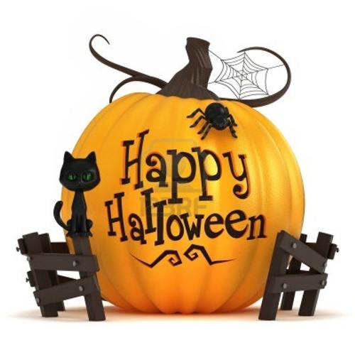

Halloween là gì? Những câu chuyện thú vị xung quanh ngày lễ Halloween
Ngày hội Halloween được bắt nguồn từ dân tộc Celt sống ở Ireland, Anh Quốc, Pháp...Halloween có tên gốc là
All
Hallows’ Evening là một lễ hội truyền thống diễn ra ngày 31-10, đêm trước ngày lễ các thánh của đạo Kitô
giáo
latinh. Trong đó “Hallow” là từ tiếng Anh cổ có nghĩa là “thánh” sau này đổi là Halloween. Ngày nay, lễ hội
Halloween không còn mang ý nghĩa tôn giáo mà mọi người đều coi đó là một lễ hội vui chơi.
-
Theo người Ireland kể rằng, có một anh chàng tên Jack, anh ta vốn là người ích kỷ, chiêu trò, tham lam
và
keo kiệt. Một hôm, có con quỷ đến quấy phá một vùng dân cư, nên các vị tu sĩ đem các vật thánh đến "yểm"
và
"khóa các cửa" ra vào. Thế là con quỷ bị bắt... Jack đã nhận ra đó là con quỷ thường vui đùa với mình và
anh
đã tìm cách gỡ vật "yểm ma quỷ" mở đường cho quỷ chạy thoát. Để đền ơn cứu mạng, quỷ hứa với Jack là sẽ
không bắt hồn Jack về Địa Ngục. Cho nên khi Jack chết thật quỷ đã không cho vào địa ngục vì lời hứa lúc
trước.

Sau này, lúc Jack chết, anh không thể lên thiên đàng vì những sự ích kỉ và thói xấu của mình khi còn
sống
nhưng cũng không thể xuống địa ngục vì lời hứa năm nào với quỷ khi anh cứu mạng nó.
-
Sử gia Nicholas Rogers, người đã khám phá nguồn gốc của ngày Halloween, lưu ý rằng trong khi "một số nhà
nghiên cứu văn học dân gian đã phát hiện nguồn gốc của nó trong lễ La Mã của Pomona, nữ thần của trái
cây và
hạt giống, hoặc trong ngày lễ của người chết gọi là Parentalia, nó rõ ràng có liên quan đến các lễ hội
Celtic của Samhain, mà ban đầu được gọi là Samuin (phát âm là sow-an hoặc sow-in) ". Tên gọi này có
nguồn
gốc từ tiếng Ailen cổ và có nghĩa là "kết thúc mùa hè". Một lễ hội tương tự đã được tổ chức bởi những
người
Anh cổ đại và được biết đến như Calan Gaeaf (phát âm là Kálan Gái av).
Snap-Apple Night bởi Daniel Maclise hiển thị một bên Halloween ở Blarney, Ireland, vào năm 1832. Các trẻ
em
trên bob quyền cho táo. Một cặp vợ chồng ở trung tâm chơi một biến thể, có liên quan đến việc lấy một
quả
táo treo từ một chuỗi. Các cặp vợ chồng tại lễ hội chơi games. Lễ hội Samhain kỷ niệm kết thúc "nửa
sáng"
của năm và bắt đầu của "nửa tối", và đôi khi được coi là "Năm Celtic mới".
The Celts cổ xưa tin rằng biên giới giữa thế giới này và các thế giới khác trở thành mỏng trên Samhain,
cho
phép những linh hồn (cả hai loại vô hại và có hại) để đi qua. Linh hồn của gia đình, ông bà tổ tiên đã
được
vinh danh và mời nhà trong khi tinh thần độc hại đã được ngăn chặn. Người ta tin rằng sự cần thiết để
tránh
khỏi những linh hồn tà ác dẫn đến việc mặc trang phục và mặt nạ. Mục đích của họ là để ngụy trang mình
như
là một linh hồn tà ác và do đó tránh tổn hại. Ở Scotland các linh hồn đã mạo nhận bởi những người đàn
ông
trẻ mặc áo trắng đeo mặt nạ, che khuất hoặc bôi đen khuôn mặt. Samhain cũng là một thời gian để dự trữ
thực
phẩm và gia súc giết mổ cho các cửa hàng mùa đông. Đống lửa hội đóng góp một phần lớn trong các lễ hội.
Tất
cả các đống lửa khác bị dập tắt và mỗi nhà thắp sáng lò sưởi của họ từ lửa trại. Các xương gia súc giết
mổ
đã được ném vào đống lửa hội. Đôi khi hai đống lửa sẽ được nhóm gần nhau, và mọi người cùng gia súc của
họ
sẽ đi bộ giữa chúng như là một nghi lễ tẩy rửa.
Một tập tục phổ biến là bói toán, thường liên quan đến việc sử dụng thực phẩm và đồ uống.
Tên gọi "Halloween" và nhiều truyền thống của nó ngày nay bắt nguồn từ thời Anh cổ xưa.
Nguồn gốc của tên Từ Halloween là lần đầu tiên được chứng thực trong thế kỷ 16 và đại diện cho một biến
thể
Scotland đầy đủ hơn các Tất cả Linh–Ngay cả ("tối"), nghĩa là, vào đêm trước Ngày lễ Các thánh. Khoảng
đầu
thế kỷ 20, cách viết "Hallowe'en" đã được sử dụng thường xuyên, đọc lướt âm "v" và rút ngắn từ. Mặc dù
cụm
từ "Các thánh" được tìm thấy trong tiếng Anh (ealra hālgena mæssedæg, ngày của tất cả các vị thánh), All
Hallows–Ngay cả bản thân nó không được chứng thực cho đến năm 1556.
Không nên chơi đùa với ma quỷ. Ma quỷ hiểu theo nghĩa bóng là những trò lừa lọc, đe dọa, làm cho người khác
sợ
hãi, những việc làm tinh quái do trí thông minh và tưởng tượng của tuổi trẻ sáng tạo ra có khi làm hại đến
người, đến xã hội... Chơi đùa, giao du với ma quỷ sẽ dễ bị cám dỗ đi vào đường tối tăm và tội lỗi.
Tuy nhiên, chuyện anh chàng Jack trong đêm Halloween cũng ghi nhận một thái độ sòng phẳng của quỷ, đó là "ân
đền, oán trả" và "giữ lời hứa." Dù rằng sự "giữ lời hứa" này đã làm cho Jack rơi vào thân phận cô hồn lang
thang
vất vưởng.
Nếu đào sâu hơn, có lẽ sẽ tìm thấy tính cách nhân bản trong câu chuyện. Thử đặt câu hỏi: tại sao dưới ánh
sáng
khoa học và kỹ thuật mà các nước Âu, Mỹ vẫn dành một ngày lễ hội cho người của "cõi Âm" mà đại diện là chàng
Jack?
Jack là nhân vật tưởng tượng nhưng đã thực sự hiện thân trong cuộc đời, trong thân phận làm người... mà lại
là
một người cô đơn. Khi chết, Jack trở thành cô hồn, không chỗ dung thân... Thiên Đàng và Địa Ngục đều từ
chối!
Truyền thống lễ hội Âu Mỹ đã dành cho Jack một ngày. Một ngày được trở lại với cõi dương. Trong ngày đó,
Jack có
thể sống vui chơi thoải mái, vì người sống đã hóa trang thành ma quỷ để linh hồn Jack có chỗ trà trộn vào
cho đỡ
cô đơn. Đây là ý nghĩa nhân bản của lễ hội Halloween.